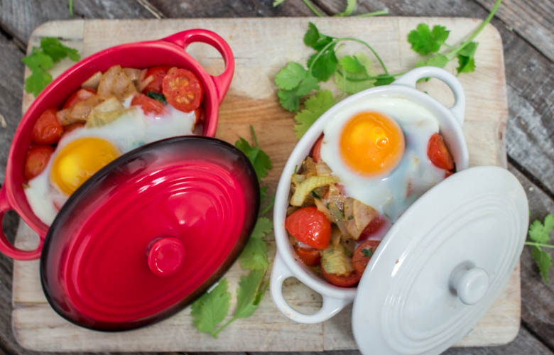

Mon oeuf cocotte épicé pour les jours un peu plus « lights »

Aujourd’hui ont se retrouve pour une recette d’œuf cocotte aux épices d’Orient! Manger oui! Manger bien c’est encore mieux 🙂 Me voila alors en ce début de semaine avec une toute nouvelle recette d’oeuf cocotte épicé et surtout ultra light (pour les jours ou on fait un peu plus attention!)
Les fêtes approchent à grands pas alors il n’est pas plus mal de mettre son estomac au repos de temps en temps histoire de se préserver avant le jour J! C’est une recette que je réalise très souvent quand je n’ai pas le temps de faire beaucoup de cuisine le soir car c’est une recette très rapide et très facile à réaliser! Toutes ces couleurs et ces odeurs dans la poêle me font craquer à chaque fois et c’est toujours un vrai plaisir de préparer ces délicieux oeufs cocotte! Ras el hanout, cannelle, coriandre ça vous parle? Moi oui!! Ce n’est pas vraiment la saison des tomates voir même pas du tout, mais bon de temps en temps faire une petite entorse à la règle « des saisons » ça ne fait pas de mal non plus surtout quand c’est bon!!! Avec cette recette je réalise quatre petites cocottes qui peuvent très bien faire l’affaire en entrée ou si vous voulez diner light c’est aussi valable en plat! A vous de voir!
Place maintenant à la recette.
Ingrédients
- Tomates cerises - 400gr
- Oeufs - 4
- Coriandre fraîche - 2 càs
- Coriandre moulue - 1/2 càc
- Huile d'olive - 1 càs
- Oignons - 1
- Ail - 1 gousse
- Ras el hanout - 1 càc
- Cannelle - 1càc
- Sel, poivre
Instructions
- Couper finement l'ail et l'oignon
- Dans un poêle faites chauffer l'huile d'olive et y faire revenir l'ail et l'oignon
- Couper les tomates cerises en deux, si elles sont toutes petites vous pouvez les laisser entières
- Les ajouter dans la poêle tout en remuant
- Ajouter les épices
- Saler, poivrer
- Remuer et laisser mijoter à feu doux pendant 10 minutes
- Préchauffer le four à 200°
- Ajouter la moitié de la coriandre fraiche
- Verser la préparation dans quatre cocottes différentes
- Casser un œufs dans chacune des cocottes
- Enfourner à 200° pendant 8 min si vous voulez des œufs pas trop cuits sinon poursuivez la cuisson 2 minutes de plus
- A la sortie du four, saupoudrer du reste de coriandre fraiche et déguster chaud!

Les tips de la communauté
Accueil positif pour cette recette light. Les lecteurs apprécient la simplicité et la rapidité. Recette bien intégrée dans la catégorie des petits plats réconfortants pour les jours moins gourmands.
Astuces
- Recette simple et rapide pour les soirées moins gourmandes
- Concept parfait pour les brunch ou les petit-déjeuners salés
Ajustements signalés
- que je teste ça, merci pour l’idée !